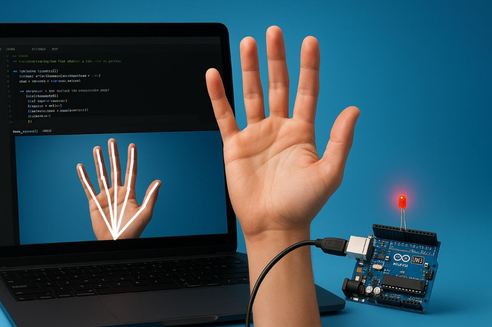

Arduino Project: Hand Gesture Based Light Control with Mediapipe & OpenCV in Python
Code for Arduino Uno
int ledPins[] = {8, 9, 10, 11, 12}; // Thumb, Index, Middle, Ring, Pinky
void setup() {
Serial.begin(9600);
for (int i = 0; i < 5; i++) {
pinMode(ledPins[i], OUTPUT);
}
}
void loop() {
if (Serial.available() >= 5) { // Expect 5 bytes for 5 fingers
for (int i = 0; i < 5; i++) {
int fingerState = Serial.read(); // Read each finger state (0 or 1)
digitalWrite(ledPins[i], fingerState == 1 ? HIGH : LOW); // Turn LED on/off
}
}
}
Code for Python
import cv2
import mediapipe as mp
import serial
import time
# Initialize serial communication with Arduino
arduino = serial.Serial(port='COM14', baudrate=9600, timeout=1)
time.sleep(2) # Wait for the serial connection to initialize
# Initialize Mediapipe
mp_hands = mp.solutions.hands
hands = mp_hands.Hands()
mp_drawing = mp.solutions.drawing_utils
# Function to detect individual fingers (1 for up, 0 for down)
def detect_fingers(image, hand_landmarks):
finger_tips = [8, 12, 16, 20] # Index, Middle, Ring, Pinky
thumb_tip = 4
finger_states = [0, 0, 0, 0, 0] # Thumb, Index, Middle, Ring, Pinky
# Check thumb
if hand_landmarks.landmark[thumb_tip].x < hand_landmarks.landmark[thumb_tip - 1].x:
finger_states[0] = 1 # Thumb is up
# Check the other fingers
for idx, tip in enumerate(finger_tips):
if hand_landmarks.landmark[tip].y < hand_landmarks.landmark[tip - 2].y:
finger_states[idx + 1] = 1 # Other fingers are up
return finger_states
# Start capturing video
cap = cv2.VideoCapture(0)
while cap.isOpened():
success, image = cap.read()
if not success:
break
image = cv2.cvtColor(cv2.flip(image, 1), cv2.COLOR_BGR2RGB)
results = hands.process(image)
image = cv2.cvtColor(image, cv2.COLOR_RGB2BGR)
if results.multi_hand_landmarks:
for hand_landmarks in results.multi_hand_landmarks:
mp_drawing.draw_landmarks(image, hand_landmarks, mp_hands.HAND_CONNECTIONS)
finger_states = detect_fingers(image, hand_landmarks)
arduino.write(bytes(finger_states)) # Send list of fingers as bytes
print(f"Fingers State: {finger_states}")
cv2.imshow('Hand Tracking', image)
if cv2.waitKey(5) & 0xFF == 27:
break
cap.release()
cv2.destroyAllWindows()
arduino.close()